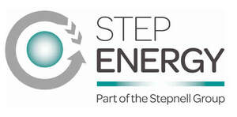

Trade Mark Journal No.2025/049 5 December 2025
UK00004298027 20 November 2025 (37,42)

- Class 37
- Building; building construction; building insulation; building reinforcing; building damp-proofing; construction of buildings; building services relating to building for industry purposes; construction of foundations for buildings; installation of building insulation; building of industrial properties; residential and commercial building construction; building construction and repair; building and construction services; building services; building and repair services; building construction services; installation of roofing membranes, facades, roofing materials; installation of metallic and non-metallic cladding for facades, walls, windows, ceilings, and buildings; constructing porches; constructing [erecting and glazing] garden buildings; property development services [construction]; development of land [construction]; construction of property; renovation of property; maintenance of property; property maintenance; advisory services relating to the renovation of property; construction of residential properties; building construction supervision services for real estate projects; construction land developing; repair of concrete; concrete repairs; scaffolding repair; roofing repair; repair of roofing; building repair; roof repair; repair of roofs; maintenance and repair of flooring; concrete renovation; building maintenance and repair; repair of tiles; installation of formwork for concrete; repair of fences; repair of buildings; repair of wood flooring; repair or maintenance of building equipment; maintenance and repair of buildings; building repair and renovation; repair of artificial wood flooring; concrete sealing; furniture maintenance and repair; maintenance and repair of furniture; plumbing installation, maintenance and repair; maintenance and repair of building contents; building repairs; maintenance and repair of parts and fittings for buildings; joinery [repair]; maintenance and repair of upholstery; supervision of building repair; repair and insulation of window joints; repair of laminate flooring; joinery services [repair of woodwork]; carpentry; fitting of wood flooring; construction of staircases of wood; carpentry services; furniture varnishing; carpentry contractor services; maintenance of wood flooring; repair of ironmongery; fitting of artificial wood flooring; furniture upholstering; plumbing and glazing services; erection of temporary seating; painting of furniture; renovation of furniture; furniture renovation; cleaning of furniture; furniture repair; repair of furniture; repairing of furniture; furniture installation; repair of kitchen furniture; glazing of windows; installation of doors and windows; doors and windows (installation of -); windows (installation of doors and -); installation of windows; cleaning of windows; replacement of windows; installation of glass in conservatories, windows, doors and greenhouses; installation of insulating glass in conservatories, windows, doors and greenhouses; glazing, installation, maintenance and repair of glass, windows and blinds; installation of draught proofing for sash windows; heat insulation of windows; installation of window frames; installation of residential solar panel power systems; installation of non-residential solar panel power systems; installation of solar heating systems; installation of solar powered systems; installation of wind power systems; installation of electric light and power systems; maintenance and repair of solar power installations; installation and maintenance of solar thermal installations; construction of utility solar installations; construction of geothermal power installations; installation of hydropower systems; maintenance and repair of solar thermal installations; installation and maintenance of photovoltaic installations; maintenance and repair of solar heating installations; installation of environmental control systems; construction of geothermal community heating installations; advisory services relating to the installation of power plants; advisory services relating to the installation of solid fuel heating systems; installation of electricity generators; air-conditioning system installation and repair; installation of instrumentation systems; installation of geothermal installations; installation of photovoltaic cells and modules; construction of geothermal energy installations; construction of geothermal heating installations; installation of clean room environmental control systems; repair of energy supply installations; maintenance of power generating apparatus and installations; repair of power generating apparatus and installations; installation of power generating apparatus; electric appliance installation and repair.
- Class 42
- Architecture; architecture services; architectural services for the design of buildings; design services relating to architecture; architecture services for the preparation of architectural plans; architectural services for the design of industrial buildings; architectural design services; architectural services for the design of commercial buildings; design of buildings; architectural design for exterior decoration; architectural design for interior decoration; architectural services relating to the development of land; architectural services relating to land development; development of land (architectural services relating to the -); land development (architectural services relating to -); design services relating to residential property; development of construction projects; industrial development services; testing of architectural ironmongery; construction draughting; draughting (construction -); design of furniture; furniture design; designing of furniture; research in the reduction of carbon emissions; certification services for the energy efficiency of buildings; advisory services relating to energy efficiency; energy auditing; professional consultancy relating to energy efficiency in buildings; energy performance testing of buildings; development of energy and power management systems; greenhouse gas emission measuring and analysis; rental of meters for the recording of energy consumption; design and development of regenerative energy generation systems; recording data relating to energy consumption in buildings; technical research in the field of carbon offsetting; design and development of energy distribution networks; consultancy relating to technological services in the field of power and energy supply; technical project studies in the field of carbon offsetting; technological analysis relating to energy and power needs of others; drafting and development of photovoltaic systems; development of power assemblies; technological consultancy in the fields of energy production and use; research in the field of energy; professional consultancy relating to the conservation of energy; engineering services relating to energy supply systems; engineering services in the field of energy technology; technological consulting services in the field of alternative energy generation; engineering services in the field of electrical power and natural gas production; advisory services relating to the use of energy.
STEPNELL LIMITED
Representative: Swindell & Pearson Limited